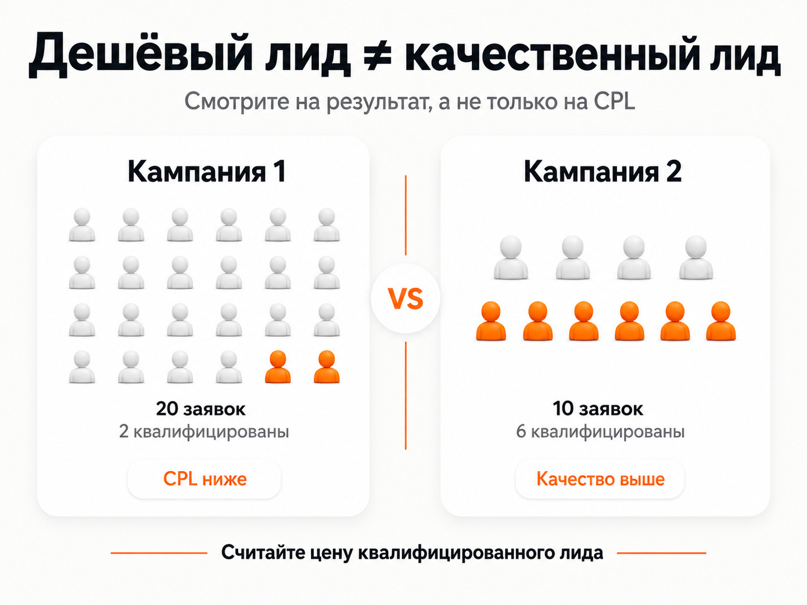
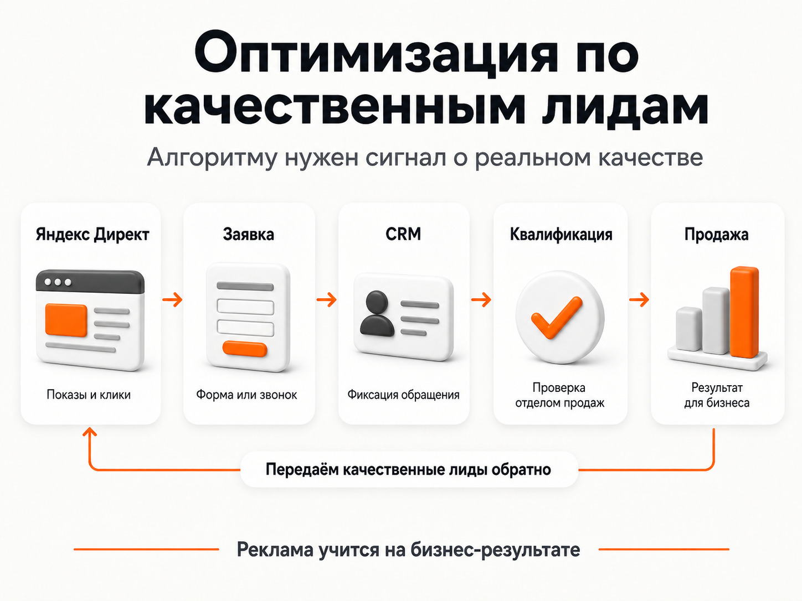

Блог о платном трафике
Нецелевые и некачественные лиды из Яндекс Директа
Как отличить ботов от нецелевых обращений, проверить источники плохих лидов и настроить рекламу на качественный результат.
Яндекс Директ может формально показывать хороший результат: заявки идут, стоимость лида укладывается в план, конверсий достаточно. Но после передачи обращений в отдел продаж выясняется, что значительная часть людей не подходит по бюджету, ищет другую услугу, находится не в том регионе или вообще утверждает, что ничего не отправляла.
В такой ситуации я сначала разделяю две совершенно разные проблемы:
- Боты, фейковые и автоматические заявки.
- Реальные люди, которые оставили заявку сами, но не подходят бизнесу.
Методы решения у них разные. Чистить поисковые запросы бесполезно, если формы массово атакуют боты. И наоборот, CAPTCHA не исправит ситуацию, когда реклама приводит настоящих людей, которые ищут совсем другой продукт.
Дешевый лид и качественный лид - не одно и то же
Одна из главных ошибок при оценке Яндекс Директа - смотреть только на стоимость заявки.
Допустим, первая кампания принесла 20 обращений по 1 000 рублей. Из них квалификацию прошли два человека.
Вторая кампания дала всего 10 обращений по 1 800 рублей, зато шесть из них соответствуют требованиям бизнеса.
По CPL первая кампания выглядит лучше. По реальному результату - намного хуже:
| Показатель | Кампания 1 | Кампания 2 |
|---|---|---|
| Лиды | 20 | 10 |
| CPL | 1 000 ₽ | 1 800 ₽ |
| Квалифицированные лиды | 2 | 6 |
| Цена квалифицированного лида | 10 000 ₽ | 3 000 ₽ |
Поэтому низкий CPL сам по себе ничего не гарантирует.
Подробнее - «CPA в Яндекс Директе: что это и как считать стоимость конверсии».
Квалифицированным лидом я бы считал обращение, которое соответствует заранее определенным требованиям бизнеса. Например, человеку действительно нужна ваша услуга, подходит регион, бюджет, формат сотрудничества и другие существенные условия.
Яндекс использует похожее определение: квалифицированный лид - звонок или заявка от человека, который подтвердил заинтересованность в товаре или услуге. Директ позволяет передавать в Метрику уже проверенные менеджерами обращения и использовать их для анализа и оптимизации рекламы.
Поэтому для бизнеса логичнее постепенно переходить от показателя «цена заявки» к показателям:
реклама → заявка → квалифицированный лид → продажа.

Сначала отделите ботов от нецелевых людей
Фразой «мусорные заявки» часто называют все подряд. Из-за этого начинают исправлять не ту проблему.
Если заявки оставляют боты
Характерные признаки:
- несуществующие или случайные номера телефонов;
- человек берет трубку и говорит, что заявку не оставлял;
- одинаковые или бессмысленные данные в формах;
- большое количество отправок за короткий промежуток времени;
- подозрительно однотипное поведение посетителей.
В самом Яндекс Директе работает многоступенчатый антифрод. Яндекс фильтрует недействительные показы, клики и конверсии, а отфильтрованные события удаляет из статистики Директа. При этом фродовый визит все равно может попасть на сайт и сохраниться во внешней CRM или аналитике. Поэтому бизнес иногда видит подозрительное обращение, которое сам Директ впоследствии уже признал недействительным.
Но полагаться только на защиту рекламной системы я бы не стал. Если проблема выраженная, дополнительная фильтрация нужна уже на самом сайте.
В зависимости от масштаба проблемы можно использовать:
- специализированные платные антифрод-сервисы;
- CAPTCHA или Smart CAPTCHA;
- дополнительную серверную проверку отправок;
- ограничения на частоту отправки формы;
- более сложные квизы;
- дополнительные поля, которые требуют осмысленного ручного ответа.
Последний вариант особенно полезен против примитивных ботов. Если квиз состоит только из кнопок, автоматический скрипт может нажимать случайные варианты и в итоге добраться до формы. Поле, где требуется самостоятельно ввести осмысленный ответ в определенном формате, пройти значительно сложнее.
Но усложнять форму до состояния банковской анкеты тоже не нужно. Защита должна соответствовать масштабу проблемы.
Подробнее - статья о скликивании, ботах и защите Яндекс Директа.
Если подозрительный трафик преимущественно идет из РСЯ, дополнительно стоит проверить площадки.
Подробнее - «Минус площадки для РСЯ: готовый список и чистка трафика».
Если заявку оставил реальный человек, но он вам не подходит
Это уже другая проблема.
Например:
- человеку нужна другая услуга;
- он рассчитывает на бюджет значительно ниже вашего;
- компания работает только с бизнесом, а обращается физлицо;
- нужен другой регион;
- требуется розничная покупка вместо оптовой;
- пользователь ищет обучение, работу или бесплатную информацию;
- человек заинтересовался предложением, но изначально не соответствует вашей целевой аудитории.
Здесь CAPTCHA ничего не исправит. Нужно искать, почему реклама и сайт допускают таких пользователей в воронку.
Проверьте реальные поисковые запросы
На поиске первым делом я смотрю не на ключевые фразы, а на реальные запросы пользователей.
Одна ключевая фраза способна приводить трафик по разным формулировкам. Если среди них есть информационный, слишком широкий или просто другой спрос, заявки соответствующего качества вполне закономерны.
Сам Яндекс рекомендует анализировать отчет «Поисковые запросы» и добавлять нерелевантные запросы и отдельные слова в минус-фразы. При необходимости запрос можно дополнительно ограничивать операторами.
Например, компания продает оборудование предприятиям. Запросы вроде «оборудование своими руками», «работа оператор оборудования», «б/у оборудование бесплатно» или запросы на запчасти могут давать переходы, но не потенциальных покупателей нового оборудования.
Поэтому проверять нужно связку:
поисковый запрос → объявление → заявка → статус лида.
Если определенная группа запросов стабильно приносит неквалифицированные обращения, сам факт низкого CPL ее не спасает.
Подробнее - «Минус-фразы для Яндекс Директа: как собрать список и правильно добавить».
Проверьте автотаргетинг
Автотаргетинг анализирует объявление и посадочную страницу и самостоятельно определяет подходящие поисковые запросы и аудиторию. На поиске сейчас можно управлять категориями запросов: целевыми, узкими, широкими, альтернативными, сопутствующими и брендовыми настройками. Полностью выключить автотаргетинг в поисковой кампании обычным переключателем нельзя, а в кампании только для РСЯ отключение доступно.
Сам по себе автотаргетинг не является источником плохих лидов. Он может работать нормально.
Проблема возникает, если часть категорий слишком сильно расширяет спрос именно для вашего бизнеса.
Поэтому я бы отдельно посмотрел:
- сколько денег потратил автотаргетинг;
- какие запросы он подобрал;
- из каких категорий пришли обращения;
- сколько среди них квалифицированных лидов;
- сколько стоит такой лид относительно обычных ключевых фраз.
Если источник стабильно хуже остальных, его нужно ограничивать на основании статистики, а не отключать только потому, что это автотаргетинг.
Подробнее - «Как отключить автотаргетинг в Яндекс Директе в 2026 году».
РСЯ может давать заявки другого качества, чем поиск
Поиск и РСЯ работают с пользователем в разных ситуациях.
На поиске человек сам вводит запрос. В РСЯ объявление показывается пользователю на сайтах и в приложениях на основании различных сигналов об интересах и контексте.
Из-за этого смешивать качество лидов из поиска и сетей в одной общей цифре неправильно.
Я бы отдельно сравнивал:
- поисковые кампании;
- РСЯ;
- конкретные площадки;
- аудитории;
- объявления и креативы.
Иногда проблема концентрируется буквально в нескольких источниках. В среднем кампания выглядит нормально, но определенная площадка дает много дешевых конверсий, которые отдел продаж почти полностью бракует.
В такой ситуации дешевый CPL снова становится ловушкой.
Для РСЯ я дополнительно смотрю площадки, расход, CTR, конверсии, Вебвизор и уже после этого качество обращений. Отключать площадки только по одному высокому CTR или нескольким плохим визитам не стоит.
Слишком широкий оффер тоже приводит не тех людей
Причина может находиться вообще не в настройках Директа.
Представим услугу стоимостью от 100 000 рублей. В объявлении написано:
«Решим вашу задачу быстро и недорого. Оставьте заявку и получите бесплатный расчет».
Никакой информации о стоимости, минимальном бюджете или формате работы нет.
Человек с бюджетом 10 000 рублей вполне логично оставляет контакты. С его точки зрения он ничего не сделал неправильно.
После звонка отдел продаж помечает обращение как нецелевое.
Но проблема возникла раньше. Реклама сама не сообщила пользователю условия, по которым он мог понять, подходит ли ему предложение.
Иногда качество лидов повышается после добавления в рекламу и на сайт фильтрующей информации:
- стоимость «от» или диапазон цен;
- минимальный объем заказа;
- регион работы;
- работа только с юридическими лицами;
- конкретный вид услуги;
- сроки;
- обязательные условия сотрудничества.
Количество заявок после этого может уменьшиться. Это нормально, если одновременно растет доля квалифицированных обращений и снижается их реальная стоимость.
Форма заявки должна помогать квалифицировать клиента
Форма с единственным полем «Телефон» дает максимальную простоту отправки, но практически ничего не сообщает о человеке.
Для массовой недорогой услуги этого может быть достаточно.
В B2B, недвижимости, строительстве, дорогих медицинских услугах и других направлениях с высокой стоимостью обработки лида иногда полезно добавить несколько квалифицирующих вопросов.
Например:
«Что вам требуется?»
«Какой ориентировочный бюджет?»
«Когда планируете начать?»
«Для компании или для себя?»
«Какой объем требуется?»
Так менеджер получает дополнительную информацию еще до звонка, а часть заведомо неподходящей аудитории отсеивается самостоятельно.
Усложнять форму нужно аккуратно. Каждый дополнительный вопрос может снижать общую конверсию сайта.
Цель здесь не в том, чтобы получить максимально много заполненных форм. Цель - оставить разумный объем обращений от людей, которых бизнес действительно способен превратить в клиентов.
Проверьте, на какую цель оптимизируется реклама
Это одна из самых серьезных причин проблем с качеством.
Автоматическая стратегия видит ту цель, которую ей передали.
Если для нее главным результатом является обычная отправка формы, она будет искать пользователей, которые с высокой вероятностью отправляют форму.
Но Директ сам по себе не знает, что после звонка менеджер забраковал человека из-за бюджета или неправильной услуги.
В стратегии «Максимум конверсий» алгоритм увеличивает долю трафика по объявлениям и ключевым фразам, которые чаще приводят к выбранному целевому действию. Для различных действий можно задавать разную ценность.
Поэтому если бизнес годами обучает рекламу на любой отправке формы, а затем удивляется большому количеству дешевых слабых лидов, проблема может находиться именно здесь.
Более зрелая схема выглядит так:
Яндекс Директ → заявка → CRM → квалификация → передача качественного лида обратно в аналитику.
Яндекс позволяет передавать проверенные заявки и звонки из CRM в Метрику и использовать квалифицированные обращения для оптимизации рекламных кампаний. Для этого доступны Центр конверсий, CRM-интеграции, API и другие способы передачи данных.
Чем ближе выбранная цель находится к реальному бизнес-результату, тем полезнее сигнал получает алгоритм.

Как найти конкретную причину некачественных лидов
Я бы не начинал с массового изменения всех кампаний.
Сначала каждому обращению нужно присвоить понятный статус и причину отказа.
Например:
| Что происходит | Где искать причину |
|---|---|
| Несуществующие номера, человек ничего не оставлял | Боты, фрод, защита формы |
| Люди спрашивают другую услугу | Запросы, автотаргетинг, объявления |
| Нужна та же услуга, но совершенно другой бюджет | Оффер, аудитория, форма |
| Плохие обращения в основном из РСЯ | Площадки, аудитории, креативы |
| Проблема только у одной группы запросов | Семантика и реальные запросы |
| Низкое качество примерно у всех источников | Оффер, сайт, критерии квалификации |
| Лид полностью соответствует условиям, но не покупает | Нужно отдельно проверять продажи, цену и продукт |
Без такой классификации фраза отдела продаж «лиды плохие» почти бесполезна.
Нужно знать, почему конкретно они плохие.
Некачественный лид не всегда является проблемой рекламы
Есть еще один момент, который регулярно упускают.
Если человек:
- сам оставил корректные контакты;
- действительно хочет рекламируемую услугу;
- подходит по географии;
- соответствует бюджету;
- отвечает другим заранее установленным требованиям,
то это квалифицированный лид.
Если менеджер не смог его закрыть в продажу, автоматически записывать такое обращение в «мусор» нельзя.
Иначе рекламный подрядчик будет пытаться исправлять кампанию на основании проблем, которые находятся уже после рекламы.
Критерии квалификации лучше определить заранее совместно с бизнесом и отделом продаж. Тогда вместо субъективного «нормальный / плохой» появляются конкретные причины отказа и цифры.
Что делать, если из Яндекс Директа идет много нецелевых заявок
Рабочая последовательность выглядит так:
- Разделить ботов и реальные обращения.
- Защитить формы, если есть фейковые отправки.
- Зафиксировать критерии квалифицированного лида.
- Размечать причины брака в CRM.
- Проверить поисковые запросы.
- Отдельно проверить автотаргетинг.
- Разделить качество поиска и РСЯ.
- Проверить площадки и аудитории РСЯ.
- Посмотреть, не привлекает ли оффер слишком широкую аудиторию.
- Добавить в форму разумную квалификацию.
- Проверить цели Метрики и стратегию.
- По возможности передавать обратно в Яндекс данные о квалифицированных лидах и продажах.
После этого оценивать нужно уже не минимальную стоимость любой заявки, а стоимость квалифицированного обращения и дальнейшую конверсию в продажу.
Иногда лучшим результатом оптимизации становится ситуация, когда заявок стало меньше, а продаж больше.
Именно поэтому качество лидов нельзя оценивать отдельно от всей воронки. Яндекс Директ должен приводить не максимальное количество заполненных форм, а такой трафик, который бизнес способен превращать в деньги.